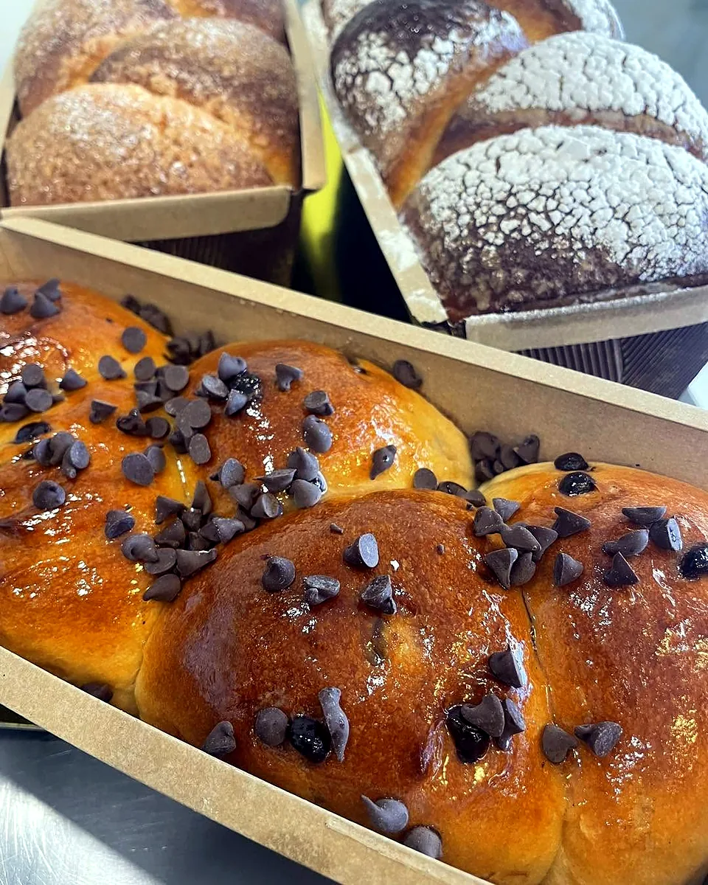
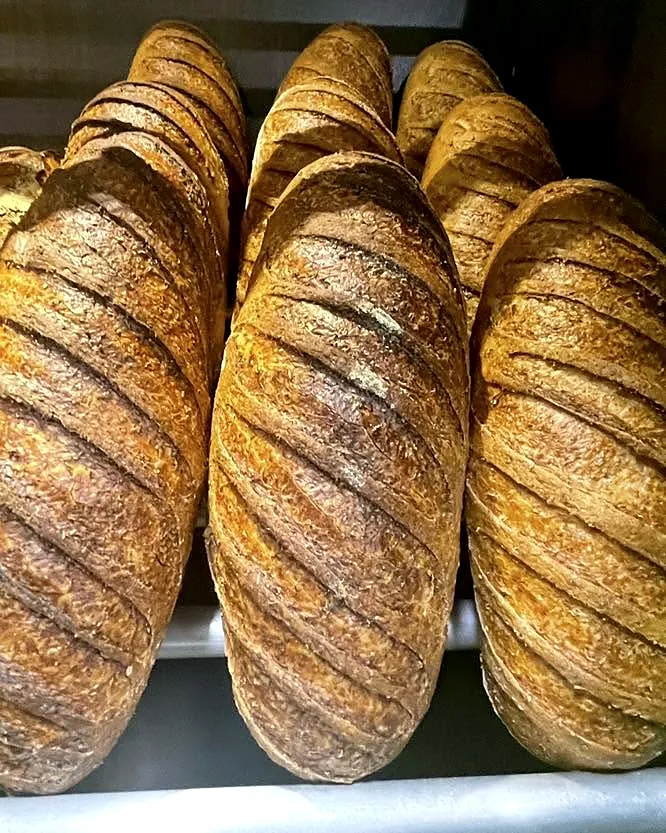
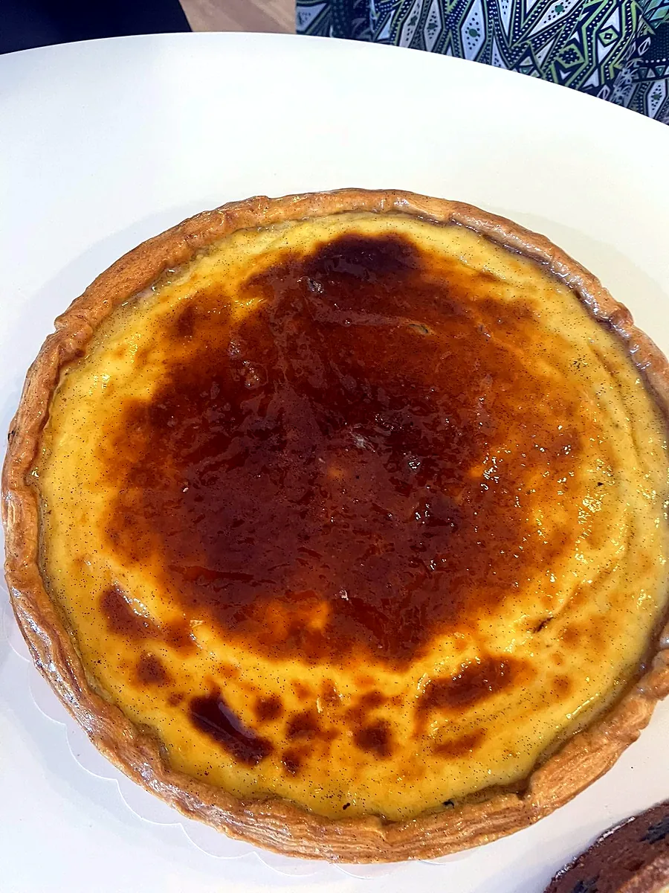
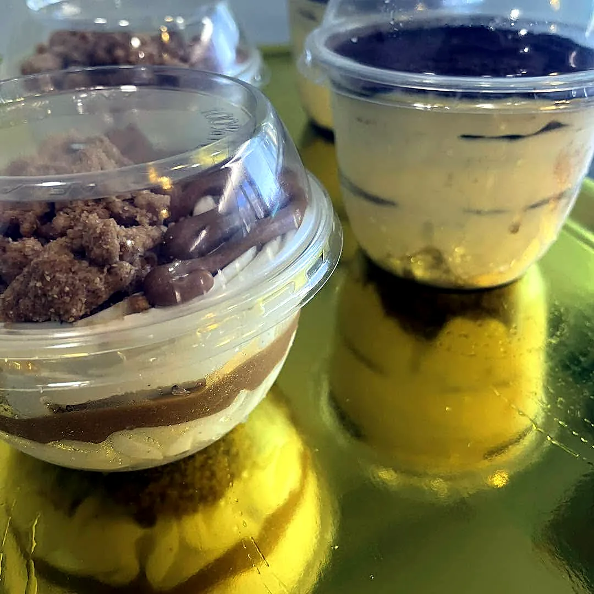
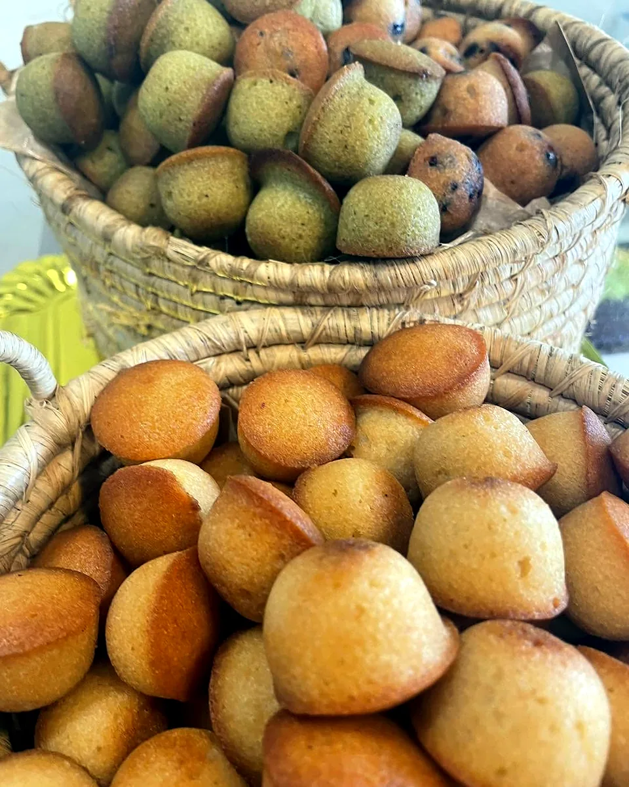
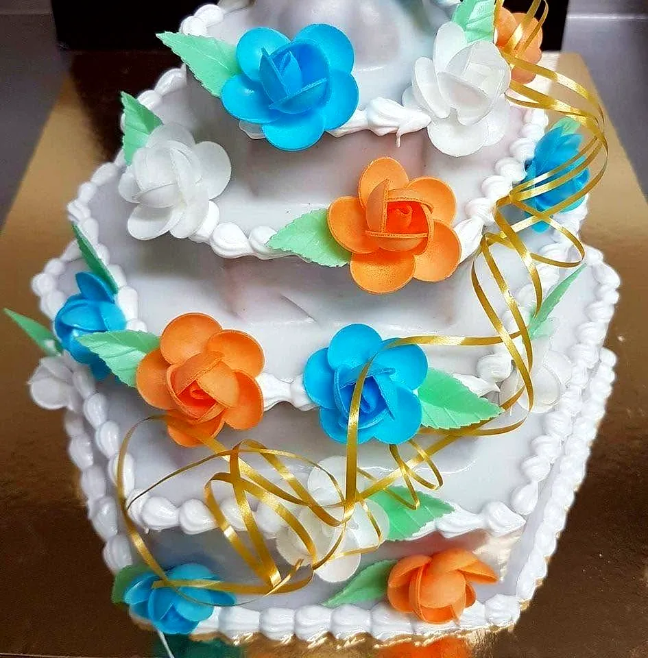
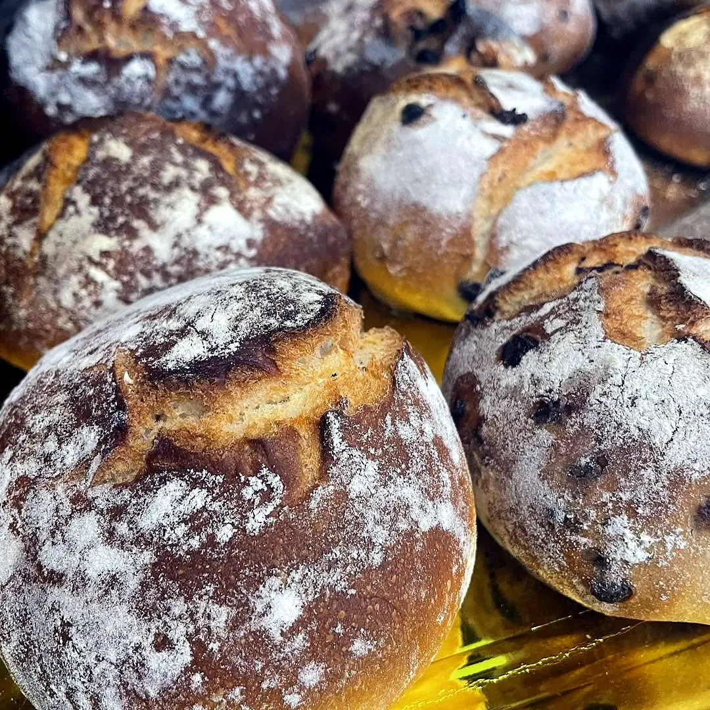

Brioches
Dorées, brillantes, généreuses en chocolat.
Boulangerie pâtisserie artisanale sur la route de la Ligne Paradis : des pains façonnés à la main, des viennoiseries et des douceurs de pâtissier.
Ô Délices du Paradis, c'est une boulangerie pâtisserie artisanale installée au 44 C route de la Ligne Paradis, à Saint-Pierre. Ici, tout est fait maison : du choix, encore et encore, préparé par une équipe de boulangers et de pâtissiers.
Ses publications s'ouvrent sur un « Bonjour » tout simple, et plus de 3 300 personnes suivent la vie du fournil sur Facebook.
Le 31 octobre, la boulangerie a partagé en vidéo les étapes de fabrication de ses baguettes. Les voici, avec ses mots :


En octobre 2026, le Concours régional du Meilleur Flan réunissait les boulangers-pâtissiers de La Réunion. La boulangerie l'a annoncé avec fierté :
Une croûte bien crantée, un dessus caramélisé : le flan de la maison, tel qu'elle le photographie.

Dorées, brillantes, généreuses en chocolat.

Crème, caramel et éclats croquants, en portions individuelles.

Petits et dorés, présentés en paniers d'osier.

Des créations décorées pour les grandes occasions.

Faites glisser pour voir la suite →
De la baguette aux pains spéciaux en passant par les croissants et les chocolatines tout est excellent. Et les desserts sont sublimes à des prix tout à fait corrects. Tout est fait sur place par une équipe de professionnels.
★★★★★ JM DPY · avis Google
J'ai commandé un mille-feuille pour mon anniversaire et il a fait l'unanimité ! Tout le monde l'a adoré, aussi beau que délicieux. Mention spéciale aussi pour leurs pains à l'ail : un vrai régal.
★★★★★ Rita B. · avis Google
Pour la table du réveillon ou un cadeau gourmand, la maison prépare tout sur place. Un simple appel suffit pour savoir ce qui est prévu cette année et réserver :
Le plus tôt est le mieux : décembre est le mois le plus gourmand de l'année.